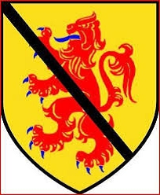

751148 1st Lord of Saltoun Laurence Abernethy
Blev högst 61 år.

Född:
1400 Haddington, East Lotian, Scotland. [1]
Död:
före 1461-03-13 Haddington, East Lotian, Scotland. [1]
Barn:
Personhistoria
1400
Födelse 1400 Haddington, East Lotian, Scotland
[1]
<1461
Död före 1461-03-13 Haddington, East Lotian, Scotland
[1]
Källor